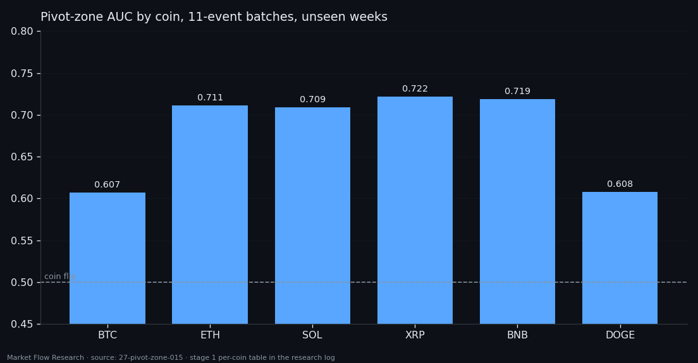
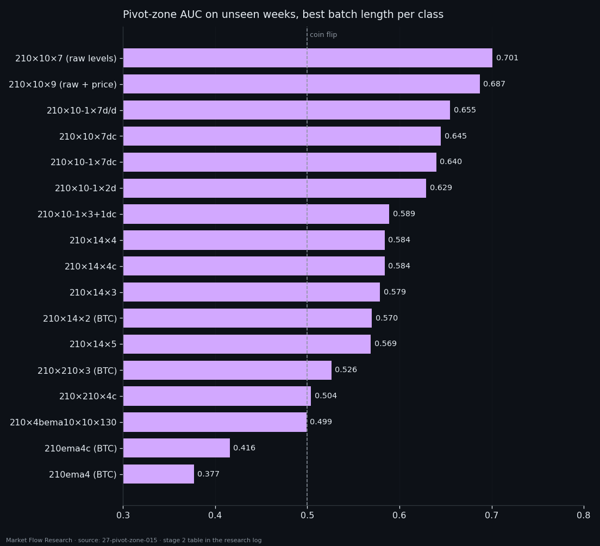

The ±0.15% Pivot Zone — Seventeen Ways to Describe an Event, One Honest Ceiling of 0.70
Near every 2.3% pivot, price lingers within 0.15% of the turning level for a while — a median of 11 events, about 38 minutes, 2% of the whole series. Is that stretch recognisable from the order book alone? We asked gradient boosting on every event of six coins, with batches of 1 to 11 events and all 17 event classes this project has built. The answer is a consistent "a little": AUC 0.61–0.66 on the main class, 0.701 at best on raw book levels — and at a working threshold, 95 hits bought with 6,725 false signals.
① A zone defined by price, measured by the book
The zigzag is the same as in studies 21–26: 2.3% on an EMA-10 of event prices. Around each pivot, price holds the turning level for a while, and that stretch is the zone: the continuous run of events around the pivot where the EMA stays within ±0.15% of its value at the pivot. Zones of neighbouring pivots never overlap — between two pivots price travels at least 2.3%.
On six coins from 14 February to 6 September 2026 there are 718 zones in 412,811 events: median length 11 events (≈ 38 minutes), a quarter shorter than 7, the longest 61. Together they are about 2% of the series — the base rate every result is compared with.
The question is asked on every event with no filtering: does the batch of K events ending here lie entirely in one zone? The input is the raw numbers of the class for those K events, nothing folded. K grows until the batch fits into only half the zones — 11. Training is everything except 14 August – 7 September, which is the unseen validation window.

② Recognisable — statistically
On `210×10-1×7d/d`, the class of the last several studies, gradient boosting recognises the zone on the unseen weeks with AUC 0.61–0.66 at every batch length — stable, never falling to 0.5. One event gives 0.642; eleven events, 0.655. That is 693 inputs instead of 63 for +0.013.
The working point shows what that means. At 20% recall, precision is 3.4% with single events (base 2.1%) and 1.2% with 11-event batches (base 0.57% — longer batches fit fewer zones, so the label itself shrinks from 1,191 to 319 positives). The lift over the base is ×1.2 to ×2.2, at 38–68 signals per coin per day. By coin, ETH, SOL, XRP and BNB reach 0.71–0.72, while BTC and DOGE — the coins with the most zone events — sit at 0.61.
The zone is a reversal zone only statistically: better than a coin, and at any usable threshold, one hit among dozens of false signals.

③ Seventeen classes: raw levels win, prices lose
The zone, label, split, batch grid and model stayed fixed; only the description of the event changed — 17 classes with a dataset (three families of different density, so the base rates differ by family).
Raw book levels describe the zone best: `210×10×7` (ten blocks × seven levels per unit of volume) reaches 0.701, and `210×10×9` 0.687, both at K = 11. Taking derivatives costs about 0.06 — for a zone defined by a price level, the level of the book is informative, its change less so. Derivative classes do best with single events; stacking derivatives adds nothing. The older families with 15 blocks of 14 seconds give 0.57–0.59. And the classes built on smoothed price — `210×210×4c`, the 13-EMA class that powered studies 12–17 — land at 0.50; the EMA classes fall to 0.38–0.42, below a coin: what looked like a zone signal on training flips on unseen weeks.
Even the best class does not make a trading signal. At the threshold taken from training, `210×10×7` fires 6,820 times on six coins over the unseen weeks and hits the zone 95 times, missing 224 zone batches: the band of false signals under the price chart is two orders of magnitude wider than the zone. The thresholds also don't transfer across coins — DOGE produces 389 false signals, ETH 2,300 on the same number of events. The zone is real and the book knows about it, weakly; what the book does not provide is a clean moment to act.

Reproduce this study
- Research log (.md, Ukrainian): goal, data, plan, scripts, every confirmed stage and table — enough to rerun the study
- Reproduction kit (.zip): the study's scripts, project rules and base scripts that build every class
If this changed how you read the tape, the natural next step is Volume Is the Fuel — Not the Steering Wheel — We recorded the Binance order book every second for six coins over five months and ran eighteen tests on what volume really does.
Volume Is the Fuel — Not the Steering Wheel
We recorded the Binance order book every second for six coins over five months and ran eighteen tests on what volume really does.
About Market Research Lab — What We Collect and Why
Most market commentary is storytelling.
From Calm to Calm: a Standard for What Counts as a Signal (BTC)
We stopped defining market signals with a stopwatch.
The Wall That Goes Quiet: What Resting Liquidity Predicts
We measured resting limit liquidity sitting on both sides of the book second by second across six coins, and asked the only question that matters:….
Comments
Discussion is powered by GitHub. Enable it by adding secrets/giscus.json (repo IDs from giscus.app).